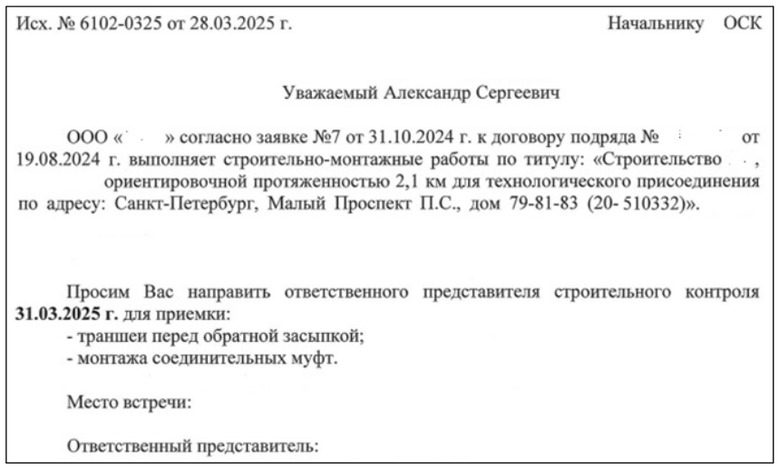

Приемочный контроль

На этом уроке освоим правила приемочного контроля и разберем, что станет его результатом. Если вы планируете стать инженером стройконтроля, то после этого урока научитесь проводить приемочный контроль на основные виды работ, а если вы работаете от лица подрядчика – будете знать, как действовать в случае выявления нарушений.
Приемочный контроль – это вид контроля, при котором подрядчик предъявляет готовую конструкцию, элемент или участок инженерной сети, а также ту работу, которая впоследствии станет скрыта и ее приемка будет невозможна. Здесь проводится приемка выполненных работ – объемов и качества.
Для проведения приемочного контроля представитель подрядчика официальным письмом уведомляет представителя строительного контроля о готовности предъявить выполненные работы за три дня. Пример письма смотрите ниже.

При приемочном контроле подрядная организация предъявляет заказчику следующую документацию:
- Общий журнал работ
- Специальные журналы работ
- Акты приемки ранее выполненных работ
- Акты лабораторных исследований
- Паспорта и сертификаты на материалы и изделия
- Исполнительные схемы
Результатом приемочного контроля является подписанный АОСР, АООК и т.п. в зависимости от того, какой элемент или конструкция предъявляется при сдаче. Подписание акта в случае приемки осуществляется на объекте. Это идеальный и правильный вариант.
В реальных условиях подписание актов и проверка объемов осуществляется в момент сдачи исполнительной документации. Поэтому при приемочном контроле необходимо провести следующие действия:
- Проверка конструкций, участков на соответствие нормативным документам (СП, ГОСТ, СТО и т.п.)
- Проверка конструкций, участков на соответствие согласованной РД
- Фиксация размеров, габаритов конструктивных элементов
- Геодезический контроль
Давайте переместимся к месту проведения строительных работ, где я в доступной форме расскажу и покажу, как инженеры стройконтроля проводят приемочный контроль.
Если в процессе контроля обнаружены отклонения или несоответствия РД, то работы могут быть приняты после устранения или согласования отступлений и изменений. Если работы выполнены с нарушениями нормативной документации, то необходимо их зафиксировать официально и оформить акт-предписания. В таком случае подрядчик будет переделывать работы или согласовывать существующую конструкцию и после предъявлять участок или конструкцию снова, но уже с наличием согласованных изменений.
Официально зафиксированное нарушение станет защитой инженера строительного контроля в случае проведения подрядчиком последующих работ без приемки предыдущих.
Рекомендуемый перечень контролируемый операций указан в СП 543.1325800.2024 в Приложении Б. Перечень операций на основные виды работ указан в таблице ниже.
Самое время закрепить учебный материал практикой. В тренажере ниже я добавила реальные ситуации при проведении приемки работ (армирование, бетонирование, благоустройство и электромонтажные работы). По представленным фото попробуйте определить пригодность работ к приемке.